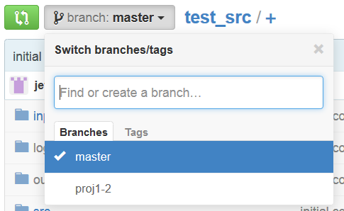
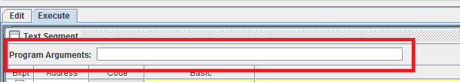

Due Saturday, March 7, 2015 @ 11:59pm
The Linker
In part 1 of this project, we wrote an assembler in C. Now, we will continue where we left off by implementing a linker in MIPS. The linker processes object files (which in our project are .out files) and generates an executable file. In the rest of this document, "input" will be used interchangeably with "object file", and "output" with "executable file".
The linker has two main tasks, combining code and relocating symbols. Code from each input file's .text segment is merged together to create an executable. This also determines the absolute address of each symbol (recall that the assembler outputs a symbol table containing the relative address of each symbol). Since the absolute address is known, instructions that rely on absolute addressing can have the addresses filled in.
The skeleton files contain many lines of code, and it can be easy to get lost in the details. Here is a overview of how the linker functions:
- Create an empty (global) symbol table. This table will contain absolute addresses.
- For each input file, create a separate relocation table. This table will contain relative addresses (why?).
- Open each input file. For each input, iterate through line-by-line and look for .text, .symbol, and .relocation sections.
- If the .text section is found, count the number of instructions in this section and determine the number of bytes the instructions will take.
- If the .symbol section is found, read each symbol and store it into the symbol table. Convert the local addresses of each symbol to an absolute address (how do you do this?).
- If the .relocation section is found, read each symbol and store it into the input file's relocation table.
- Open the output file.
- For each input file, find the .text section and read one instruction at a time. Check whether the instruction requires relocation. If it does, use the symbol table and the relocation table for this input file to relocate. Then, write it into the next line of the output file. If the instruction does not require relocation, write it into the output file directly.
For the sake of simplicity, we will skip many of the error checking steps that a linker would normally perform. The checks that you do need to perform are stated in the instructions.
Implementation Steps
We will be developing with MARS. MARS runs very slowly across SSH connections, so if you have not done so, you should download MARS onto your computer by clicking here. MARS requires Java J2SE 1.5 or later installed onto your computer. Also, since MARS is a Java application, its behavior should be the same regardless of the operating system you are using.
When assembling a program with MARS, make sure that the program is in the current tab. When you open multiple tabs, it can be easy to forget which one you are on.
Also, make sure you go to "Settings" and turn on the "Initialize Program Counter to global 'main' if defined" option:

Step 0: Obtaining the Files
Before you do anything, make sure you commit and push your changes! Otherwise you risk losing your work!
Only one person needs to add the proj1-2 files to the repository. Communicate with your partner before doing this step. Make sure you have committed and pushed your changes to project 1-1 to GitHub first. Then, create a new branch called proj1-2:
git branch proj1-2 git checkout proj1-2 # or a shortcut is: git checkout -b proj1-2
Make sure you are on branch proj1-2. You can check this by typing:
git branch
Next, fetch the proj1-2 files from the proj1-2 branch in the proj1_starter repository and merge:
git fetch proj1_starter git merge proj1_starter/proj1-2 -m "merged proj1-2 skeleton code"
Finally, push the proj1-2 branch to GitHub:
git push --set-upstream origin proj1-2 # or a shorcut is: git push -u origin proj1-2
Log on to your GitHub account and verify that there are two branches:
You can now switch between the branches using the git checkout command.
Step 1: String Utilities
In linker-src/string.s, implement strlen(), strncpy(), and copy_of_str(). copy_of_str() should allocate memory dynamically using Syscall 9, and it is recommended that you use strlen() and strncpy() in its implementation. Do not modify the other functions in the file, but you should take a look at their descriptions, since they may come in handy later. Also, if you are stuck on a function, looking at the implementation of a related function may help you.
You can find test cases in linker-test/test_string.s. Note that if you have not implemented a function, the tester may crash. You can comment out test cases for functions that you have not yet implemented.
Step 2: Symbol List
In linker-src/symbol_list.s, complete the implmentation of SymbolList, which serves the same purpose that SymbolTable did in project 1-1. SymbolList uses a linked list to keep track of (symbol addr, symbol name) pairs. An empty SymbolList is simply a pointer to NULL. When an (addr, name) pair is added to a SymbolList, a new list node is created and added to the front of the list. If the SymbolList list node struct were to be declared in C, it would be:
typedef struct symbollist {
int addr;
char* name;
struct symbollist* next;
} SymbolList;
If you are having trouble with addr_for_symbol(), it may be helpful to look at symbol_for_addr(), which is already defined for you. Test cases for SymbolList can be found in linker-test/test_symbol_list.s. You do NOT need to free the list, as MARS has no free syscall.
Step 3: Linker Utilities
Before you continue, it may be a good idea to look at slides 27 to 33 of the CALL lecture as a quick refresher.
This step requires you to make changes in two files, linker-src/parsetools.s and linker-src/linker_utils.s. In the first file, you will be implementing hex_to_str(), which writes a 32-bit number in hexadecimal format. Tests for this function can be found in linker-test/test_parsetools.s.
For the second part, you will be implementing inst_needs_relocation() and relocate_inst(). inst_needs_relocation() will be called on each instruction, and it should return 1 for any instruction that needs relocating. relocate_inst() performs the actual relocation, using the symbol table and relocation table provided. You will need to perform error-checking for relocate_inst() as described in the comments.
Step 4: Completing the Linker
You will need to complete the implementation of write_machine_code() in linker-src/linker.s. This function will copy the .text section of an object file (the input) to the executable (the output) while performing any relocations as neccessary. The first part of the function searches for the .text segment in the object file. Once that is found, the function will write to the executable one instruction at a time. Instructions are first converted from characters to a number, relocations are performed if neccessary, and the instruction is written in hexadecimal to the executable.
Instead of writing the function from scratch, we have provided 7 blanks for you to fill in (each blank consists of one or more instructions). Each blank is denoted by YOUR_INSTRUCTIONS_HERE and accompanied by a description. After you have filled in all the blanks, your linker should be ready to run!
Please do not give away what instructions should go inside each blank.
Test Cases
Test cases for each of the functions you wrote in steps 1-3 are in the linker-tests directory. The test case for each file is preceeded by the prefix test_ (for example, test cases for linker-src/string.s are located in linker-tests/test_string.s). To run the tests, open the appropriate test file in MARS and press Run.
Each test file contains test cases for every function you need to implement in the corresponding source file (so linker-tests/test_string.s contains test cases for strlen(), strncpy(), and copy_of_str()). The test cases are run from the main() function of the test file. If you have not implemented all the functions in a given source file, you may want to comment out tests for functions you haven't implemented. Fro example, if you've implmented strlen() and strncpy() but not copy_of_str(), you should comment out the line jal test_copy_of_str before running the test.
Running the Linker
The linker accepts an arbitrary number of input (object) file names followed by an output file name. The input files will be combined, and the result be placed in the output file. If the output file already exists, it will be overwritten. The files will be combined in the order that they were given (eg. input file 1 goes first, then input file 2, etc).
When running in MARS, after you assemble your code you can enter arguments into the "Program Arguments" text field, located at the top of the text segment. MARS interprets file paths as relative to the executable itself. You may need to place a copy of MARS in your proj1 directory and run that.
If you want to run from the command line, we have also give you an executable called linker You may first need to turn on the execute permission:
chmod u+x linker
Afterwards, you can pass in the input and output file names by supplying them as arguments. Note that the linker requires at least one input and one output name, so you need to specify two arguments at minimum.
./linker <input 1 name> <input 2 name> ... <input N name> <output name>
We have give some sample input-output pairs, which may be useful as a reference during step 4. The inputs are located in link-in and outputs are located in link-out. linker1.out (recall that we use .out to denote object files, which are inputs to the linker) and linker2.out are standalone test cases, but linker3A.out and linker3B.out should be linked together:
./linker link-in/linker1.out link-out/output1 ./linker link-in/linker2.out link-out/output2 ./linker link-in/linker3A.out link-in/linker3B.out link-out/output3
You can compare your output to the reference outputs in the link-out/ref directory. diff may be useful:
diff link-out/output1 link-out/ref/output1_ref diff link-out/output2 link-out/ref/output2_ref diff link-out/output3 link-out/ref/output3_ref
Debugging Tips
- Make sure you are assembling from the correct tab. MARS always assembles from the currently active tab.
- Note that there are two tabs when running MARS at the bottom, "Mars Messages" and "Run I/O". The first shows error messages while the second displays your program's output. If your program runs succesfully, the Run I/O tab will be active, but if your program crashes, the Mars Messages tab will be shown with an error message. Parts of your program may still have been run successfully though, and you can click on the Run I/O tab. This can help you figure out what part of the program causes the crash. Note that program output from previous runs are also displayed, so it may be helpful to press the "Clear" button after assembling and before running.
- If you are getting "invalid program counter value" errors, check to make sure that 1) you have checked "initialize program counter to globl main" and 2) you are following function calling conventions. Are you calling functions with jal? Are you saving $ra.
- If you are getting "address out of range" errors, you are passing an invalid address to a load/store command. The best way to debug these errors is to set breakpoints around the line which causes the error, and then step through your code while observing how values in your register change.
- If MARS seems to freeze, your program may be in an infinite loop. Try pausing MARS and stepping through the program. Are you forgetting a termination check? Or maybe you are forgetting to increment a variable?
- After MARS assembles your code, it can be hard if you are trying to find a specific line. However, since MARS keeps comments that are on the same line as an instruction, you can tag a line of interest with an easy-to-find comment.
- Similarly, it may be a good idea to label the first and last lines of each function with comments like "#Begin func_name()" and "#End func_name()". That way, it'll be easier to figure out where you are.
- It can also be helpful to insert print syscalls in the middle of your function. See the Help menu for various types of prints. Be aware that you may clobber the $a0 and $v0 registers!
Submission
There are two steps required to submit proj1-2. Failure to perform both steps will result in loss of credit:
First, you must submit using the standard unix submit program on the instructional servers. This assumes that you followed the earlier instructions and did all of your work inside of your git repository. To submit, follow these instructions after logging into your cs61c-XX class account:
cd ~/proj1-XX-YY/linker-src # proj1-XX-YY = your shared git repo submit proj1-2
Note that you must be in the linker-src directory. Once you type submit proj1-2, follow the prompts generated by the submission system. It will tell you when your submission has been successful and you can confirm this by looking at the output of glookup -t.
Additionally, you must submit proj1-2 to your shared GitHub repository:
cd ~/proj1-XX-YY # Or where your shared git repo is git checkout proj1-2 # IMPORTANT! Make sure you are on the correct branch! git add -u git commit -m "project 1-2 submission" git tag "proj1-2-sub" # The tag MUST be "proj1-2-sub". Failure to do so will result in loss of credit. git push origin proj1-2-sub # This tells git to push the commit tagged proj1-2-sub
Resubmitting
If you need to re-submit, you can follow the same set of steps that you would if you were submitting for the first time, but you will need to use the -f flag to tag and push to GitHub:
# Do everything as above until you get to tagging git tag -f "proj1-2-sub" git push -f origin proj1-2-sub
Note that in general, force pushes should be used with caution. They will overwrite your remote repository with information from your local copy. As long as you have not damaged your local copy in any way, this will be fine.